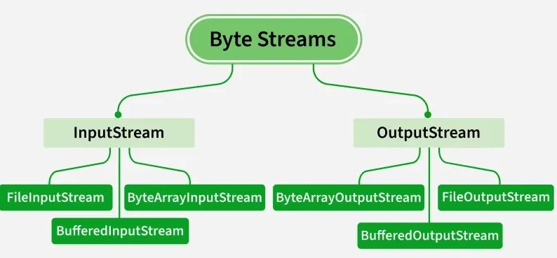
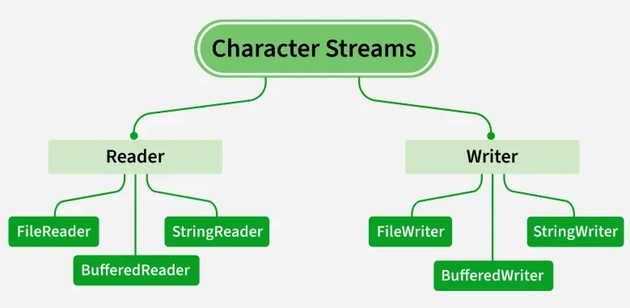
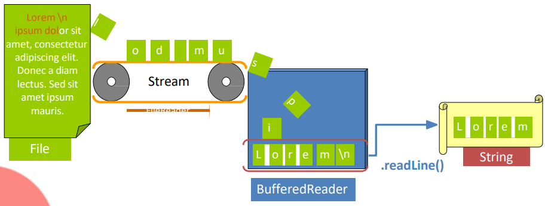
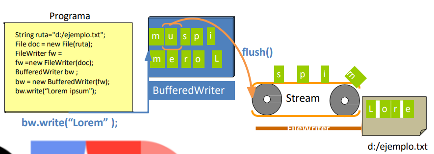

1. Introducción a la Persistencia en Ficheros
En toda aplicación, la necesidad de almacenar la información de manera permanente es fundamental. Los ficheros permiten guardar datos más allá de la ejecución del programa.
Java proporciona diferentes formas de trabajar con ficheros:
- Flujo de bytes: Usando
InputStreamyOutputStream - Flujo de caracteres: Usando
ReaderyWriter(recomendado)


Todas estas clases provienen del paquete java.io. Nosotros nos centraremos en el
flujo de caracteres,
que es más adecuado para trabajar con texto.
1.1. Operaciones con ficheros
Podemos realizar las siguientes operaciones con ficheros:
- Leer contenido de un fichero existente
- Escribir contenido en un fichero nuevo o existente
- Modificar o añadir contenido a un fichero
- Manipular ficheros (crear, eliminar, renombrar)
2. Creación y Manipulación de Ficheros
Para trabajar con ficheros, utilizamos la clase File del paquete java.io.
2.1. Constructores de la clase File
// Constructor básico
File fichero = new File(path);
El parámetro path almacena la ruta del fichero (relativa o absoluta
partiendo de la raíz).
2.2. File.separator
File.separator es una constante que devuelve el carácter que utiliza el Sistema Operativo
para separar las carpetas en las rutas:
- Windows:
\(barra invertida) - Linux/Mac:
/(barra normal)
Importante: Para escapar un carácter especial (interpretarlo literalmente) en una
cadena de texto,
se utiliza una barra invertida adicional \\.
2.3. Ejemplo práctico
String rutaActual = System.getProperty("user.dir");
String separador = File.separator;
String rutaFichero = rutaActual + separador + "datos.txt";
File f = new File(rutaFichero);
if (f.exists()) {
System.out.println("El fichero existe.");
System.out.println("Nombre del fichero: " + f.getName());
} else {
System.out.println("El fichero no existe.");
}
2.4. Métodos principales de la clase File
| Método | Descripción |
|---|---|
exists() |
Devuelve true si el fichero o directorio existe |
isFile() |
Devuelve true si la ruta apunta a un fichero |
isDirectory() |
Devuelve true si la ruta apunta a un directorio |
canRead() |
Devuelve true si el fichero es legible |
canWrite() |
Devuelve true si el fichero es editable |
canExecute() |
Devuelve true si el fichero es ejecutable |
length() |
Devuelve el tamaño del fichero en bytes |
list() |
Devuelve un array con los ficheros del directorio |
mkdir() |
Crea un directorio (devuelve true si tiene éxito) |
delete() |
Elimina el fichero o directorio vacío |
renameTo(File) |
Renombra el fichero |
getName() |
Devuelve el nombre del fichero sin la ruta |
3. Lectura de Ficheros
Para leer ficheros de texto, utilizamos la clase FileReader que implementa la interfaz
Reader.
Esta clase permite leer caracteres de un fichero.
3.1. Constructores de FileReader
// Constructor 1: Con ruta como String
FileReader fr = new FileReader("ruta/del/fichero.txt");
// Constructor 2: Con objeto File
File archivo = new File("ruta/del/fichero.txt");
FileReader fr = new FileReader(archivo);
3.2. Método read()
El método más popular de FileReader es read(), que puede:
- Leer un carácter por carácter (devuelve un entero)
- Aceptar un array de caracteres (llamado buffer)
3.3. Lectura línea por línea con BufferedReader
Si queremos leer líneas enteras, utilizaremos BufferedReader
que envuelve un FileReader:

File archivo = new File("archivo.txt");
FileReader fr = new FileReader(archivo);
// Creación de BufferedReader para poder hacer una lectura cómoda (disponemos del método readLine()).
BufferedReader br = new BufferedReader(fr);
// Lectura del fichero
String linea;
while ((linea = br.readLine()) != null) {
System.out.println(linea);
}
3.4. Manejo de excepciones
La apertura del fichero y su lectura pueden lanzar excepciones que debemos capturar.
La excepción más importante es IOException.
Importante: El fichero debe cerrarse cuando se termina de utilizar mediante el método
close().
Se recomienda usar try-catch-finally para garantizar el cierre.
3.5. Ejemplo completo de lectura
public static void main(String[] args) {
File archivo = new File("archivo.txt");
FileReader fr = null;
try {
// Apertura del fichero y creación de BufferedReader para poder
// hacer una lectura cómoda (disponemos del método readLine()).
fr = new FileReader(archivo);
BufferedReader br = new BufferedReader(fr);
// Lectura del fichero
String linea;
while ((linea = br.readLine()) != null) {
System.out.println(linea);
}
} catch (IOException ex) {
System.out.println("ERROR al abrir o leer el archivo: " + ex.getMessage());
} finally {
// En el finally nos aseguramos que se cierre tanto si todo va bien
// como si salta una excepción.
try {
if (fr != null) {
fr.close();
}
} catch (IOException ex) {
System.out.println("ERROR al cerrar el archivo: " + ex.getMessage());
}
}
}
4. Escritura de Ficheros
Para escribir contenido en ficheros, utilizamos la clase FileWriter
que implementa la interfaz Writer.
4.1. Constructores de FileWriter
// Constructor 1: Con ruta y opción de añadir contenido
FileWriter fw = new FileWriter("ruta/del/fichero.txt", true);
// Constructor 2: Con objeto File
File fichero = new File("ruta/del/fichero.txt");
FileWriter fw = new FileWriter(fichero);
4.2. Parámetro anadir
En el primer constructor, el parámetro anadir (boolean) determina el comportamiento:
- true: El contenido se añade a continuación (append)
- false: Se sobrescribe el fichero completo (defecto)
4.3. Método write()
El método más popular es write(), que puede:
- Escribir un String
- Aceptar un array de caracteres (buffer)
4.4. Escritura eficiente con BufferedWriter
Si queremos escribir contenido de manera más eficiente, utilizaremos BufferedWriter
que envuelve un FileWriter:

File documento = new File("ruta_al_documento.txt");
FileWriter fw = new FileWriter(documento); // Stream conectado al fichero a escribir.
// BufferedWriter: Buffer que almacena datos hacia el stream
BufferedWriter bw = new BufferedWriter(fw);
// Escribir contenido en el buffer
bw.write("Nuevo texto");
bw.write("\n");
// flush(): envía los datos que queden en el buffer al fichero
bw.flush();
// close(): se liberan los recursos asignados al outputStream
bw.close();
4.5. Ejemplo completo de escritura
public static void main(String[] args) {
File archivo = new File("salida.txt");
FileWriter fw = null;
BufferedWriter bw = null;
try {
// Creamos un FileWriter para escribir en el fichero
// El parámetro true significa que añadiremos contenido si existe
fw = new FileWriter(archivo, true);
// Creación de BufferedWriter para poder hacer una escritura cómoda y eficiente
bw = new BufferedWriter(fw);
// Escribimos contenido en el buffer
bw.write("Este es un ejemplo de escritura en ficheros.\n");
bw.write("Se puede escribir múltiples líneas.\n");
bw.write("Cada write() añade contenido al buffer.\n");
// flush(): envía los datos al fichero
bw.flush();
System.out.println("Archivo escrito correctamente.");
} catch (IOException ex) {
System.out.println("ERROR al escribir en el archivo: " + ex.getMessage());
} finally {
// En el finally nos aseguramos que se cierren tanto si todo va bien
// como si salta una excepción.
try {
if (bw != null) {
bw.close(); // Importante cerrar el fichero
}
} catch (IOException ex) {
System.out.println("ERROR al cerrar el archivo: " + ex.getMessage());
}
}
}
4.6. Métodos útiles de FileWriter
FileWriter fw = new FileWriter("archivo.txt", false);
// Escribir un String
fw.write("Hola, mundo!");
// Escribir un salto de línea
fw.write("\n");
// Escribir desde un array de caracteres
char[] buffer = {'H', 'o', 'l', 'a'};
fw.write(buffer);
// Usar flush() para asegurar que se escriben los datos en buffer
fw.flush();
// Cerrar el fichero
fw.close();
5. Comparativa FileReader vs FileWriter
| Característica | FileReader | FileWriter |
|---|---|---|
| Función | Leer ficheros de texto | Escribir en ficheros de texto |
| Tipo de dato | Entrada (input) | Salida (output) |
| Método principal | read() | write() |
| Lectura línea a línea | Con BufferedReader | N/A |
| Parámetro especial | N/A | anadir (true/false) |
5.1. Buenas prácticas
- Siempre utiliza try-catch-finally: Garantiza que se capten excepciones y se cierren los recursos.
- Usa File.separator: Hace tu código portable entre diferentes sistemas operativos.
- Cierra los ficheros: Evita fugas de recursos llamando a close() en el bloque finally.
- Valida la existencia: Comprueba si un fichero existe antes de leerlo con exists().
- Usa BufferedReader para lectura: Es más eficiente que leer carácter por carácter. Permite leer líneas completas con readLine().
- Usa BufferedWriter para escritura: Es más eficiente que escribir directamente con FileWriter. Almacena datos en buffer y mejora el rendimiento.
- Usa flush(): Cuando uses BufferedWriter, asegúrate de llamar a flush() para enviar los datos pendientes al fichero antes de cerrar.
- Maneja excepciones específicas: IOException es la más importante en operaciones con ficheros.